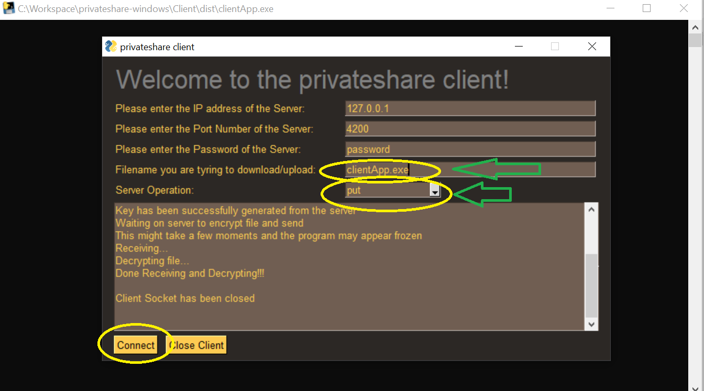
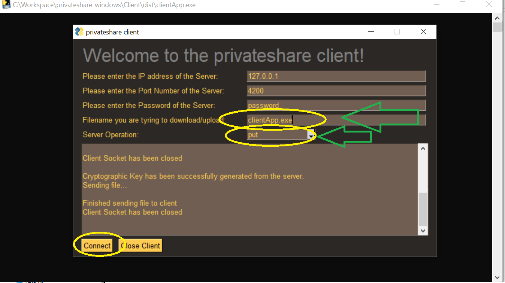
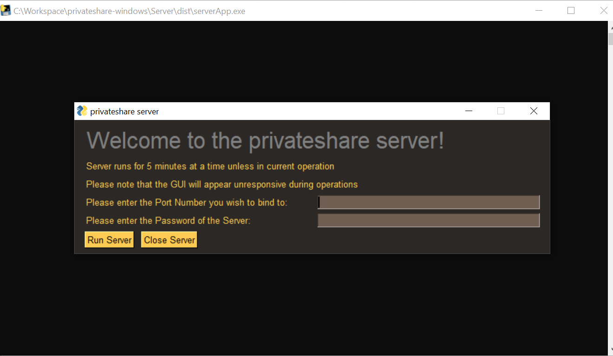
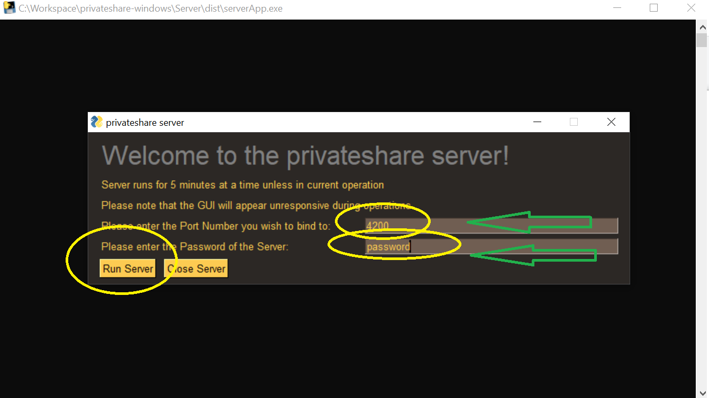
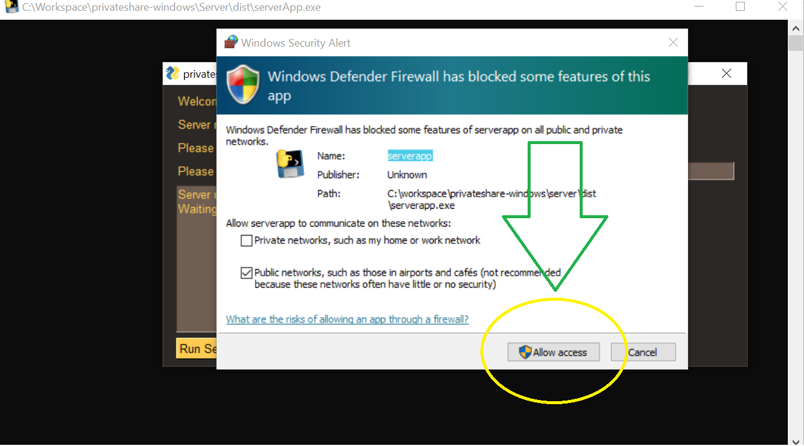
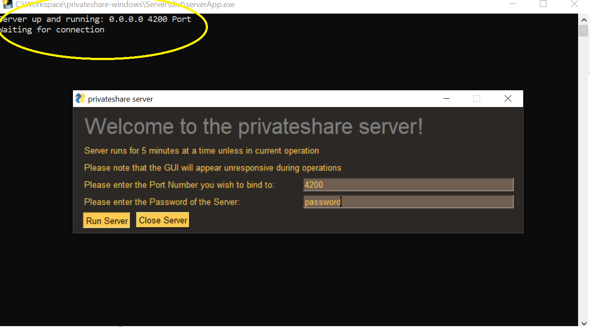
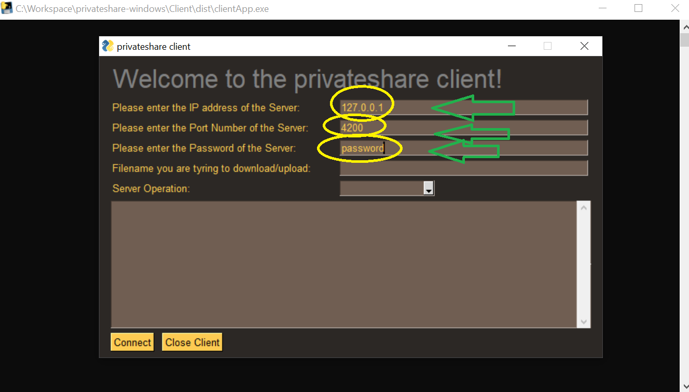
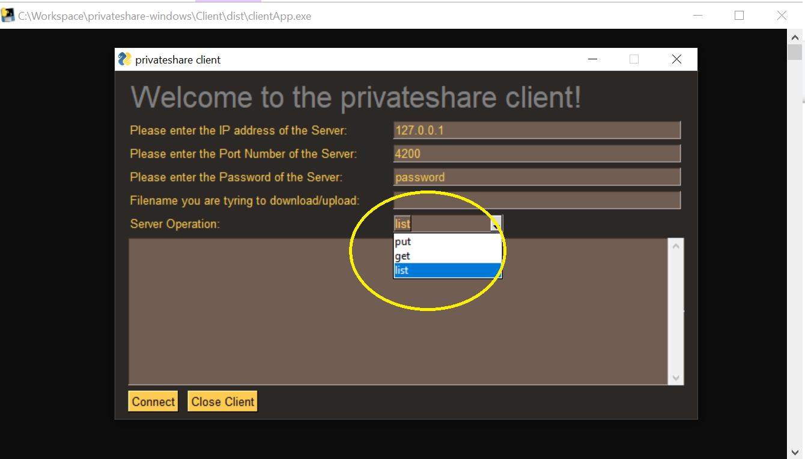
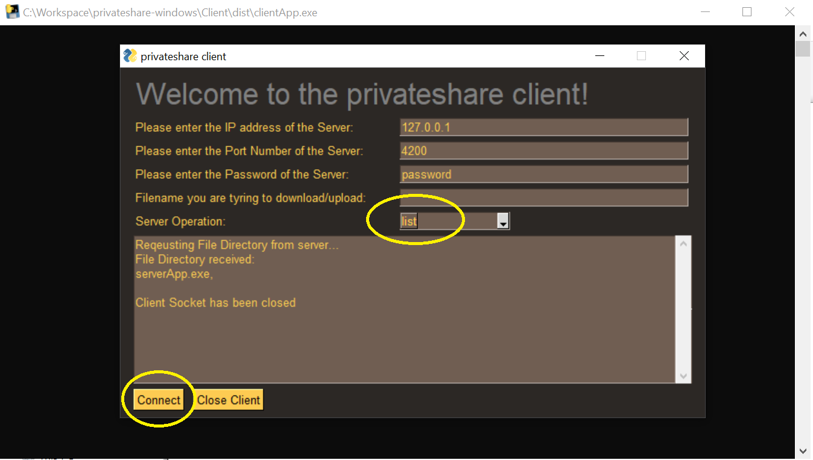

Downloads
Installation
- Download the client or server from the links above. Which you need will depend on what you are trying to do (download/upload).
- Open serverApp.exe/serverApp.app and wait for the GUI to load like in the image below.
- Enter the port number you wish the server socket to bind to like in the image below.
- Click Run Server to start the server.
- If prompted to allow features of the app through Windows Defender Firewall, click Allow Access like the image below.
- The Server may appear frozen after accepting this prompt. If so, do not worry, the server is working! This is a bug to do with GUI's and infinite loops, but not to worry, the server is working!
- Last but not least, in future when opening the server and connecting to a port, it will look look like this
- Open clientApp.exe/clientApp.app and wait for the GUI to load like the image below
- Enter the IP address of the server you are trying to connect to as well as the port number the server is bound to (these credentials are usually provided by the person maintaining the server)
- From here you can connect with the server by selecting one of the options from the menu on the left. "Put", uploads a file with specified filename to the server. "Get" downloads a file with specified filename from the server. "List", retrieves a list of available files from the server which can be downloaded by the client.
- Start with the "List" command to see what's available on the server.
- To download a file from the given list, change the option to "Get" from the operation menu on the left, choose a file, and type that filename into the box at the bottom of the application. Then press the "Put/Get/List" button to begin the download. * Note, files will be downloaded by default to the same directory in which clientApp.exe/clientApp.app is located.
- To upload file to the server, change the option to "Put" from the operation menu on the left, choose a file from the directory in which clientApp.exe/clientApp.app is located in, and enter the filename into the box at the bottom of the application. Then press the "Put/Get/List" button to begin the upload.
 
Server Installation (Steps 2-7)




Client Installation (Steps 8-14)


 